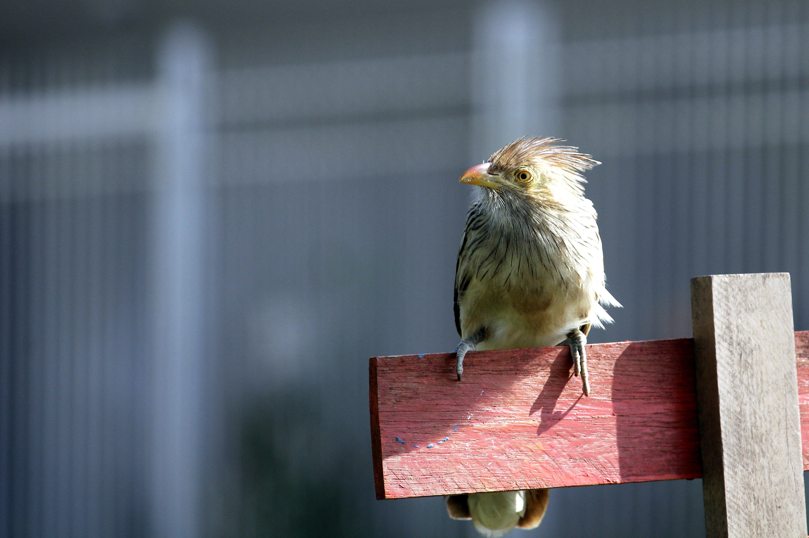

Prácticas del tema 4
1. Música de Brasil (listas ordenadas)
- Samba
- Cartola
- As Rosas Não Falam
- O Mundo É um Moinho
- Paulinho da Viola
- Foi um Rio Que Passou em Minha Vida
- Coração Leviano
- Cartola
- Rock brasileño
- Legião Urbana
- Tempo Perdido
- Pais e Filhos
- Charlie Brown Jr.
- Zoio de Lula
- Lugar ao Sol
- Legião Urbana
- Forró
- Luiz Gonzaga
- Asa Branca
- Xote das Meninas
- Luiz Gonzaga
2. Lugares que conozco (listas sin ordenar)
- Brasil
- São Paulo
- Campinas
- Río de Janeiro
- España
- Andalucía
- Córdoba
- Sevilla
- Madrid
- Andalucía
3. Enlaces
Esto es un enlace absoluto: Portal del gobierno de Brasil.
Y esto es un enlace relativo a otro ejercicio: Tema 3.
4. Imagenes
Primero una imagen que esta en una pagina externa:

Ahora una imagen guardada dentro de mi carpeta img:

5. Iframe
Este ejemplo abre mi miniweb en un iframe. Es una página local, no necesita internet.